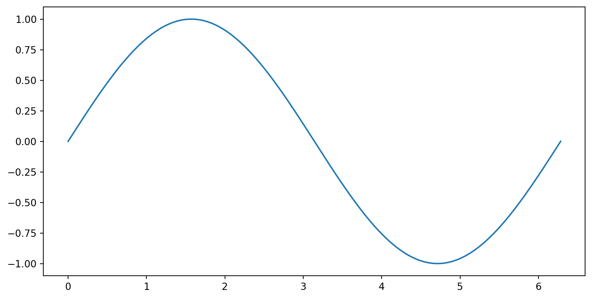
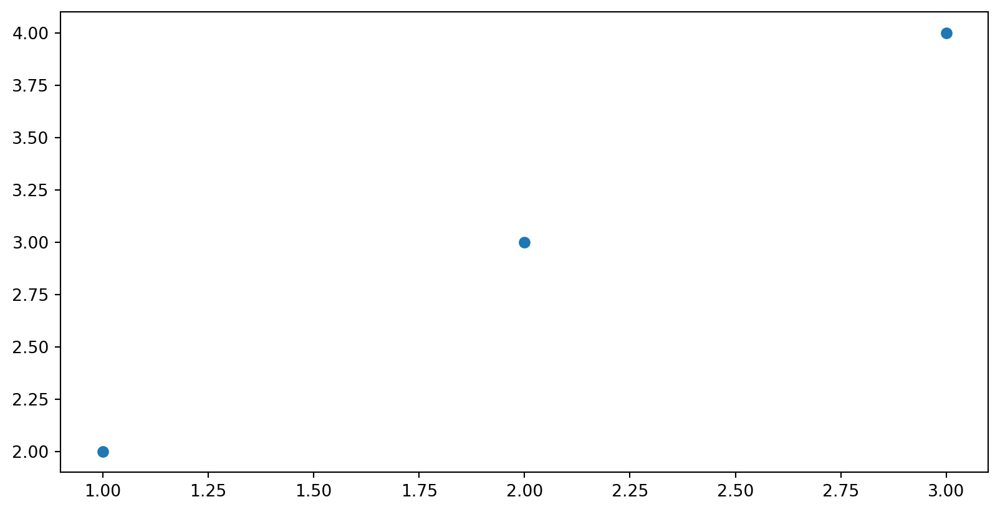
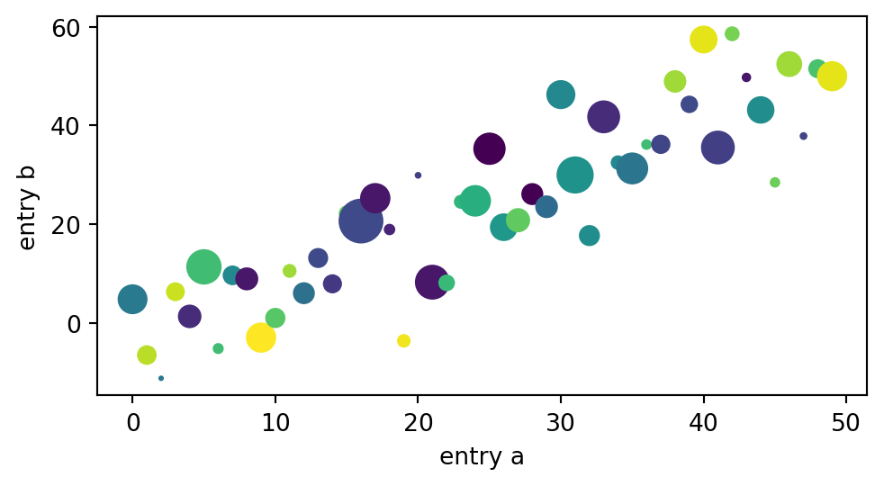
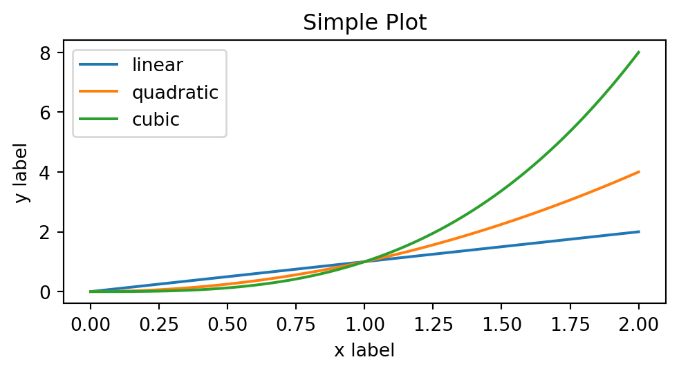

Files: Containers to store data, text, or binary information.
File Paths: The address of a file in the file system.
Absolute Paths: Start from the root directory (e.g., /home/user/file.txt).
Relative Paths: Start from the current directory (e.g., ./file.txt).
Using the pathlib Module
The pathlib module is Python’s modern way of handling file system paths.
Provides an easy-to-use, object-oriented interface for working with paths.
from pathlib import Path# Create a Path objectpath = Path("example_directory/file.txt")
Why pathlib?
More readable and powerful compared to older modules like os.
Supports methods for path manipulation, file handling, and more.
Directory Management
Getting the Current Working Directory
The current working directory is where your Python script runs.
from pathlib import Path# Get current working directorycwd = Path.cwd()print(cwd)
Absolute vs Relative Paths
Absolute Path: /home/user/project/file.txt
Use for a fixed reference in the filesystem.
Relative Path: ../file.txt
Use when referencing files relative to the current location.
Creating a Directory
You can create new directories using pathlib.
# Create a new directorynew_dir = Path("new_directory")new_dir.mkdir(exist_ok=True) # 'exist_ok=True' prevents errors if it already exists
Changing the Current Working Directory
Changing the current working directory allows the script to work in a different location.
import os# Change to a new directoryos.chdir("new_directory")print(Path.cwd())
Deleting Files and Directories
Remove files or directories using unlink() or rmdir().
# Deleting a filefile= Path("example.txt")file.unlink() # Removes the file# Deleting a directorydir= Path("example_directory")dir.rmdir() # Removes the directory (must be empty)
Listing Files and Directories
List all files and sub-directories in a given path.
for item in Path(".").iterdir():print(item)
Reading and Writing to Files in Python
Opening a File
The open() function is used to open files in Python.
Syntax: open(file, mode), where file is the name of the file, and mode specifies how to open the file.
file=open("example.txt", "r") # Open for reading
Closing a File
Always close a file after you are done.
Use file.close() to free up system resources.
file=open("example.txt", "r")# Do some operationsfile.close()
Problems Without Closing
Not closing a file can lead to:
Resource leaks.
Issues with data not being written correctly.
Using with for Safer File Handling
Best Practice: Use with to open files.
Why? The with statement handles closing the file automatically, even if an error occurs.
withopen("example.txt", "r") asfile: data =file.read() # File automatically closed after this block
File Modes
Modes define the purpose for which a file is opened.
# Read the entire filewithopen("example.txt", "r") asfile: data =file.read()print(data)# Read file line by linewithopen("example.txt", "r") asfile: line =file.readline()while line:print(line.strip()) line =file.readline()# Read all lines into a listwithopen("example.txt", "r") asfile: lines =file.readlines()for line in lines:print(line.strip())
Writing to Files
write(): Writes a string to a file. Note that it overwrites by default if the file already exists.
# Write to a file (overwriting it)withopen("example.txt", "w") asfile:file.write("This is a new line of text.")
Appending Data to Files
Use 'a' mode to append instead of overwriting.
# Append to the existing filewithopen("example.txt", "a") asfile:file.write("\nThis text is appended.")
Handling File Exceptions
Handling Errors Gracefully
File operations may fail due to reasons like:
The file doesn’t exist.
Insufficient permissions.
Example: Handling File Not Found
try:withopen("nonexistent.txt", "r") asfile: data =file.read()exceptFileNotFoundError:print("Error: The file was not found.")
Using try...except for Robust Code
Best Practice: Use exception handling to manage potential errors.
Helps provide meaningful error messages to users.
try:withopen("example.txt", "r") asfile: data =file.read()exceptFileNotFoundError:print("File does not exist.")exceptIOError:print("An error occurred while accessing the file.")
Best Practices for File Handling
Use with Statement:
Always use with to open files, ensuring proper cleanup.
Use Appropriate File Modes:
Choose 'r', 'w', 'a' based on your intention—avoid unintended overwrites.
Handle Exceptions Gracefully:
Use try...except to handle common errors, such as missing files.
Avoid Hardcoding File Paths
Hardcoding paths may cause compatibility issues across different systems.
Instead, use environment variables or configuration files to determine file locations.
Flushing the Write Buffer
flush() Method: Forces the buffer to write data to disk.
Typically used when dealing with critical data that should be written immediately.
withopen("important_log.txt", "w") asfile:file.write("Critical log entry")file.flush() # Force data to be written immediately
File Pointer Operations
withopen('example.txt', 'r') asfile:# Get current position position =file.tell()print(f"Current position: {position}")# Move to specific positionfile.seek(10)# Read from new position content =file.read(20)print(f"Content: {content}")
A Brief Introduction to NumPy
What is NumPy?
NumPy (Numerical Python) is an open-source Python library that provides support for large, multi-dimensional homogeneous arrays and matrices, along with a collection of mathematical functions to efficiently operate on these data structures. It is the core package for scientific computing in Python.
Reference Documentation
Reference the official NumPy documentation for additional information on the library:
NumPy arrays are faster and more memory-efficient than Python lists because they are implemented in C, stored in contiguous memory, and are homogeneous. This allows for vectorized operations, meaning that operations are performed on the entire array at once, rather than on each element individually.
import numpy as np# Create a list of numbersnumbers =list(range(1000000))# Create a NumPy array of numbersnp_numbers = np.array(numbers)# Multiply each element by 2%timeit [number *2for number in numbers]%timeit np_numbers *2
27.8 ms ± 470 μs per loop (mean ± std. dev. of 7 runs, 10 loops each)
330 μs ± 2.23 μs per loop (mean ± std. dev. of 7 runs, 1,000 loops each)
Installing and Importing NumPy
NumPy is a third-party library, so you need to install it separately. You can install it using pip:
pip install numpy
Or if using conda:
conda install numpy
To use NumPy in your Python code, you need to import the library. The convention is:
import NumPy as np
Key Features of NumPy
N-dimensional Arrays: At the core of NumPy is the ndarray, a versatile and efficient multidimensional array object. Arrays in NumPy are homogenous, meaning all elements must be of the same data type, which ensures speed and memory efficiency.
Vectorized Operations: NumPy allows for element-wise operations on arrays, eliminating the need for explicit loops, which makes the code cleaner and faster. This is often referred to as vectorization.
Broadcasting: This feature allows NumPy to perform arithmetic operations on arrays of different shapes in a smart way, by stretching or “broadcasting” the smaller array to match the larger array’s shape.
Mathematical Functions: NumPy includes a wide range of mathematical functions, including trigonometry, statistics, linear algebra, and random number generation, making it a powerful tool for scientific computing.
Integration with Other Libraries: NumPy arrays are the standard way of representing data in many other Python libraries, such as Matplotlib, Pandas, SciPy, scikit-learn, and TensorFlow.
Example
import numpy as np# Creating a 1D arrayarr = np.array([1, 2, 3, 4])# Element-wise operations (squaring each element)arr_squared = arr **2print(arr_squared) # Output: [1 4 9 16]
Matplotlib
What is Matplotlib?
Matplotlib is a comprehensive library for creating static, animated, and interactive visualizations in Python. It provides the tools and framework for building a wide variety of plots and charts.
Reference Documentation
The following resources from the official Matplotlib documentation provide additional information on the library:
Matplotlib is a third-party library, so you need to install it separately. You can install it using pip:
pip install matplotlib
Or if using conda:
conda install matplotlib
Rendering in Different Environments
Matplotlib can render plots in various environments. Sometimes, it may assume a GUI is available when it is not. To avoid issues on systems without a display, set the backend to Agg. This non-interactive backend is ideal for generating plots as image files or for batch processing.
You can set the backend with:
import matplotlibmatplotlib.use('Agg') # Use 'Agg' for non-GUI environments
Matplotlib Quickstart
Introduction
The content of this section is based on the Quick Start Guide from the Matplotlib team. We will cover basic Matplotlib usage patterns and best practices.
Plotting
pyplot is a module within the Matplotlib library used to create plots, it includes functions to set up the figure, add plots, labels, titles, and more. It’s often imported as plt as shown below:
The axes are the area of a plot where data points are specified using a coordinate system, such as x-y for 2D Cartesian plots, theta-r for polar plots, or x-y-z for 3D plots.
import matplotlib.pyplot as pltimport numpy as npx = np.linspace(0, 2* np.pi, 200)y = np.sin(x)fig, ax = plt.subplots()ax.plot(x, y)plt.show()

Parts of a Figure
The Figure keeps track of all the child Axes, a group of ‘special’ Artists (titles, figure legends, colorbars, etc.), and nested subfigures.
Common ways you’ll create a new Figure:
fig = plt.figure() # an empty figure with no Axesfig, ax = plt.subplots() # a figure with a single Axesfig, axs = plt.subplots(2, 2) # a figure with a 2x2 grid of Axes# a figure with one Axes on the left, and two on the right:fig, axs = plt.subplot_mosaic([['left', 'right_top'], ['left', 'right_bottom']])
subplots() and subplot_mosaic() are convenient functions that create a Figure and multiple Axes objects within it. You can also add individual Axes manually to a Figure later if needed.
An Axes is an Artist attached to a Figure that contains a region for plotting data, and usually includes two (or three in the case of 3D) Axis objects (be aware of the difference between Axes and Axis) that provide ticks and tick labels to provide scales for the data in the Axes. Each Axes has:
The Axes methods are the primary interface for configuring most parts of your plot (adding data, controlling axis scales and limits, adding labels etc.).
Axis objects control the scale, limits, and generation of ticks (marks on the axis) and tick labels (the text labeling the ticks). The placement of ticks is managed by a Locator object, while the formatting of tick labels is handled by a Formatter object.
Everything visible on a Figure is an Artist, including Figure, Axes, and Axis objects. This also applies to Text objects, Line2D objects, collections, Patch objects, and more. When the Figure is rendered, all Artists are drawn to the canvas. Most Artists are associated with a specific Axes; they cannot be shared across multiple Axes or moved between them.
Types of inputs to plotting functions
Plotting functions generally expect inputs as numpy.array, it is common practice to explicitly convert to numpy.array before plotting. This example demonstrates using np.asarray to convert a numpy.matrix to a numpy.array before plotting:
import matplotlib.pyplot as pltimport numpy as npb = np.matrix([[1, 2], [2, 3], [3, 4]])b_asarray = np.asarray(b)# plotting the first column against the second columnx, y = b_asarray[:, 0], b_asarray[:, 1]plt.scatter(x, y)

String-Indexable Objects
You can specify a dataset using the data keyword argument, allowing you to work with string-indexable objects (dictionaries, structured NumPy arrays, or Pandas DataFrames). By passing the names of the x and y variables as strings, Matplotlib will automatically extract the corresponding data from the specified dataset.
import matplotlib.pyplot as pltimport numpy as npnp.random.seed(19680801) # seed the random number generator.data = {'a': np.arange(50),'c': np.random.randint(0, 50, 50),'d': np.random.randn(50)}data['b'] = data['a'] +10* np.random.randn(50)data['d'] = np.abs(data['d']) *100fig, ax = plt.subplots(figsize=(5, 2.7), layout='constrained')ax.scatter('a', 'b', c='c', s='d', data=data)ax.set_xlabel('entry a')ax.set_ylabel('entry b')
Text(0, 0.5, 'entry b')

Coding Styles
There are essentially two ways to use Matplotlib:
Explicitly create Figures and Axes, and call methods on them (the “object-oriented (OO) style”).
Rely on pyplot to implicitly create and manage the Figures and Axes, and use pyplot functions for plotting.
Pyplot Style (Implicit)
The pyplot style is more convenient for simple plots and is often used in scripts and notebooks.
import matplotlib.pyplot as pltimport numpy as npx = np.linspace(0, 2, 100) # Sample data.plt.figure(figsize=(5, 2.7), layout='constrained')plt.plot(x, x, label='linear') # Plot some data on the (implicit) Axes.plt.plot(x, x**2, label='quadratic') # etc.plt.plot(x, x**3, label='cubic')plt.xlabel('x label')plt.ylabel('y label')plt.title("Simple Plot")plt.legend()

Object-Oriented Style
The OO style is more customizable and is generally the preferred approach, especially for more complex plots.
import matplotlib.pyplot as pltimport numpy as npx = np.linspace(0, 2, 100) # Sample data.# Note that even in the OO-style, we use `.pyplot.figure` to create the Figure.fig, ax = plt.subplots(figsize=(5, 2.7), layout='constrained')ax.plot(x, x, label='linear') # Plot some data on the Axes.ax.plot(x, x**2, label='quadratic') # Plot more data on the Axes...ax.plot(x, x**3, label='cubic') # ... and some more.ax.set_xlabel('x label') # Add an x-label to the Axes.ax.set_ylabel('y label') # Add a y-label to the Axes.ax.set_title("Simple Plot") # Add a title to the Axes.ax.legend() # Add a legend.
Styling Artists
Most plotting methods have styling options for the Artists, accessible either when a plotting method is called, or from a “setter” on the Artist. In the plot below we manually set the color, linewidth, and linestyle of the Artists created by plot, and we set the linestyle of the second line after the fact with set_linestyle.
Matplotlib offers a flexible range of color options (see allowable color definitions). Some plots allow the use of multiple colors; for example, in a scatter plot, the marker edges can be a different color from the marker interiors.
import matplotlib.pyplot as pltimport numpy as npdata1, data2 = np.random.randn(2, 100)fig, ax = plt.subplots(figsize=(5, 2.7))ax.scatter(data1, data2, s=50, facecolor='c', edgecolor='k')